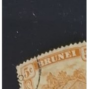
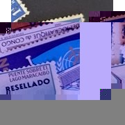

Discover what's in your stamp collection.
Turn photos of your stamps into a clear, editable inventory. Whether you've collected for years or just received a collection, start by seeing what you have.
From photos to inventory

Stamp 001recorded Stamp 002review
Stamp 002review
Stamp 003recordedStart with what you have.
You don't need to be a stamp expert to begin. A clear inventory gives you a useful starting point for organising your collection, learning more about it and seeing what's there.
For collectors
Turn photos of your collection into structured records that are easy to review, edit and organise.
For curious beginners
Start exploring your stamps without having to identify and record everything by hand.
Received a collection?
Get a clear first overview of a collection you've inherited, received or recently discovered.
Received a stamp collection and not sure where to start?
Start with a few photos. The scanner helps turn visible stamps into an editable inventory, giving you a clearer view of what you have before you decide what you want to research next.
From stamp photos to a clear inventory.
Photograph your stamps, create an inventory and review the results at your own pace.
Photograph your stamps
Use clear, well-lit photos with the stamps fully visible whenever possible.
Create your inventory
Let the scanner turn visible stamps into structured, editable records.
Review and explore
Check the results, edit details and see which stamps you may want to research further.
See your collection more clearly.
Questions before you start
Do I need to know anything about stamps?
No. The scanner is designed to give you a starting point. You can review and edit the inventory as you learn more about your collection.
Can I use it for an inherited collection?
Yes. It can help you create an initial inventory of visible stamps so you have a clearer overview before doing further research.
Does it tell me what my stamps are worth?
No. The scanner does not determine value, rarity or authenticity. It helps you organise your collection and spot stamps you may want to research further.
Can I edit the results?
Yes. You can review, edit and correct the generated inventory.
Can I save my inventory?
Yes. You can save your work as Excel or CSV.
See what's in your collection.
Start with a few clear photos and build an inventory you can review, organise and explore.
Start my stamp inventory